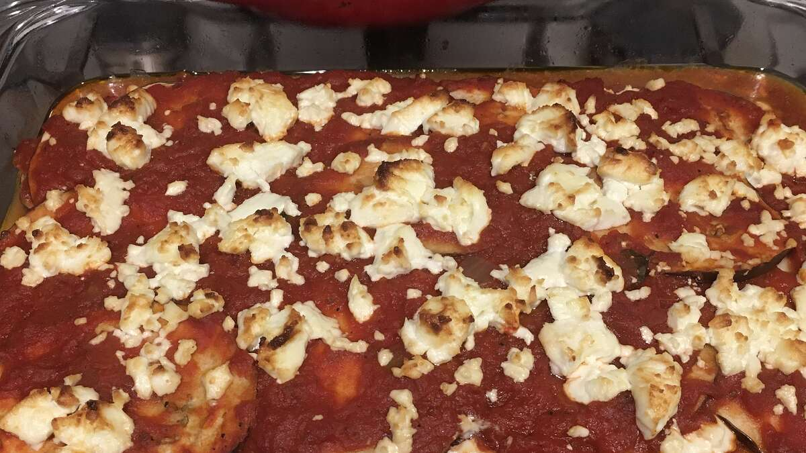

Eggplant and Goat Cheese Lasagna

Description: this lasagna is a take on the traditional. Instead of noodles, it uses sliced eggplant. Instead of ricotta, it uses goat cheese. It is delicious!!!
- cooking spray
- 1 large eggplant, sliced into 1/4 inch rounds
- 1 (28 ounce) jar garden vegetable pasta sauce
- 1 (11 ounce) log goat cheese, sliced
- Step 1
Preheat oven to 350 degrees F (175 degrees C).
- Step 2
Spray a 9x13-inch baking dish with cooking spray.
- Step 3
Arrange one fourth of eggplant slices in a layer in the bottom of the dish.
- Step 4
Pour one fourth of pasta sauce on top of eggplant layer.
- Step 5
Dot pasta sauce layer with one fourth of goat cheese slices.
- Step 6
Repeat layers three more times with remaining ingredients, ending with a top layer of goat cheese.
- Step 7
Bake in preheated oven until pasta sauce is bubbling and goat cheese is melted, 45 to 60 minutes.